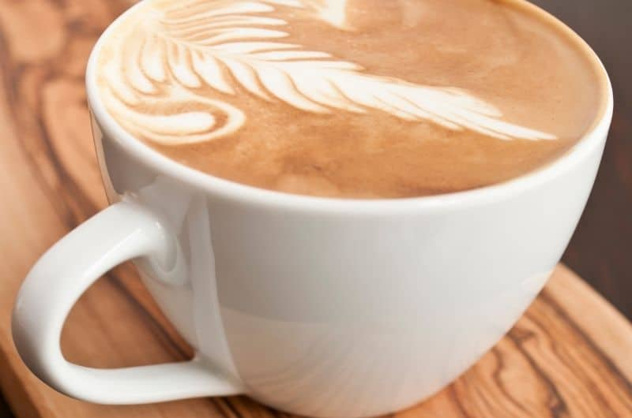

Starbucks Pumpkin Spice
- Whisk together the pumpkin puree, light brown sugar, and milk in your saucepan.
- Cook over medium heat. Make sure to stir frequently until it becomes steamy and hot. Don’t boil.
- Now, take this out from the heat.
- Whisk in the vanilla and the pumpkin pie sauce.
- Whisk in the coffee. Keep whisking until it turns frothy.
- Divide this between two coffee cups or mugs.
- Adjust the sweetness to taste.
- You can garnish with a sprinkle of nutmeg and whipped cream if you like.
Starbucks Cinnamon Dolce Latte
- First, we make the syrup. In a small saucepan, add all of the syrup ingredients and place over medium heat. Slowly cook and stir until you have a smooth and slightly straw-colored liquid.
- Transfer to a glass jar or other heatproof contained to cool. Once cooled, store in the refrigerator until you need to use it.
- After you have made your syrup, add the milk and espresso to a small saucepan. Place over medium heat and stir in the recommended amount of syrup. Stir constantly, ensuring that the milk doesn’t boil or stick to the bottom of the pan. When you see small bubbles beginning to rise, turn off the heat.
- Pour the latte into a tall, thick glass or mug. Add two (or three) spoonfuls of whipped cream and dust with a pinch of powdered cinnamon.

Starbucks Caramel Frappuccino
- In a blender, add your ice cubes and your coffee shot. Add your milk and the caramel sauce. Blend on a high setting following the instructions given in our hints and tips. The more you blend, the smoother the drink will be. We find it takes around 30 seconds
- Pour the coffee and milk blend into a tall glass.
- Add a large spoonful of whipped cream and then drizzle with a little extra caramel sauce. Finish with a straw.

Starbucks Flat White
- Prepare 3 ounces of espresso or 2 shots and pour them into the cup.
- If you want a sweeter flat white, add sugar to the espresso.
- Steam one cup of milk and froth it for at least 60 seconds using a milk frother, or until it creates a microfoam. If you don’t have a milk frother, feel free to use a mason jar with a lid. Pour the milk into the jar, close it, and shake vigorously.
- Pour the hot microfoam over the espresso until there’s a dot of foam on top.

Pumpkin Spice
For the Syrup:
- In a small saucepan, add the sugar, water, and peppermint extract. Stir well until combined.
- Place the pan on medium heat and constantly stir until the liquid starts to thicken and bubble slightly. It is ready when it changes to a really pale straw color.
- Allow your syrup to cool and then transfer to a sealable container or bottle.
To make Starbucks Peppermint Hot Chocolate:
- Take a small saucepan and combine the milk, cream, and chocolate. Place over medium heat and constantly stir until the chocolate begins to melt.
- Add in your peppermint syrup and continue to stir until the chocolate has melted entirely.
- Pour into a large mug or thick glass and top with a dollop of whipped cream. Grate any remaining chocolate over the top to garnish.